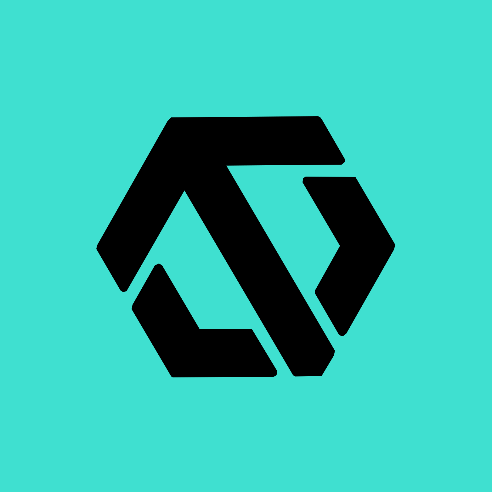

Secondary School Certificate · Science
Ideal School & College, Motijheel
CREATIVE & DIGITAL / DHAKA, BANGLADESH
I work at the intersection of business, visual design and digital technology — turning thoughtful ideas into identities, experiences and meaningful work.
I connect creative thinking with practical execution, bringing ideas to life through design, communication and technology.
My journey has grown through freelance design projects, teaching, college clubs and collaborative initiatives. I enjoy learning by doing, taking responsibility and finding thoughtful ways to solve problems.
I'm especially interested in the space where business strategy, digital tools and analytical thinking meet, and in how thoughtful ideas can become meaningful experiences.
100+ creative works across brand identity, campaigns, visual communication and motion. A growing archive of commissioned, personal and offline work.
A SELECTION FROM THE ARCHIVE · MORE OFFLINE WORK IS BEING CATALOGUED
Ideal School & College, Motijheel
Sabujbagh Government College
Government Titumir College
Pure Information Technology Engineering Training Institute Bangladesh (P.I.T.E.T.I.B)
Nagoya University of Commerce and Business · Nagoya, Japan
Academic grades and language test scores are intentionally not published on this portfolio.

A personal venture shaped by creativity, brand identity and a passion for building something of my own.
EXPLORE PRODUCTS & SHOP ↗ OPEN FACEBOOK PAGE ↗Facebook is the official destination for current product details, availability and ordering.